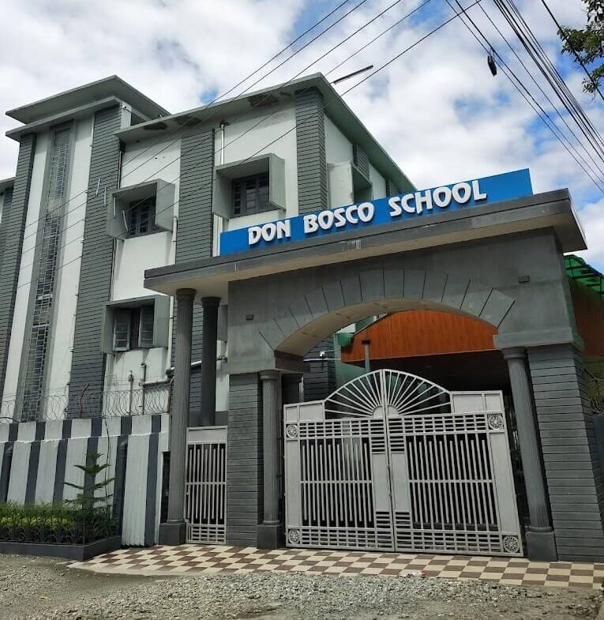
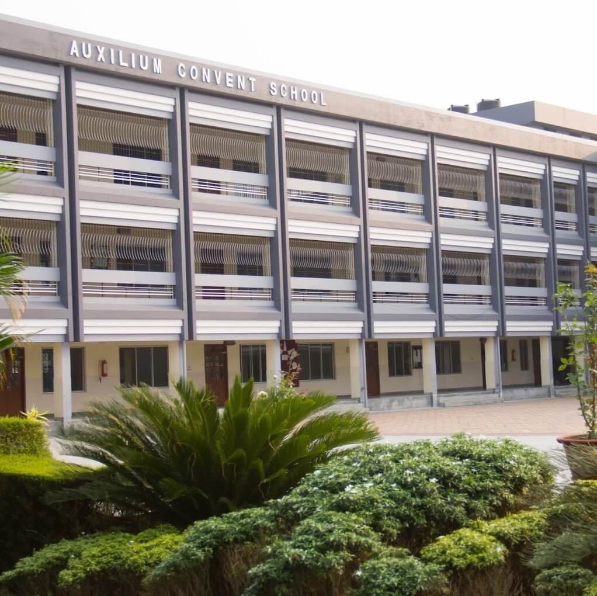
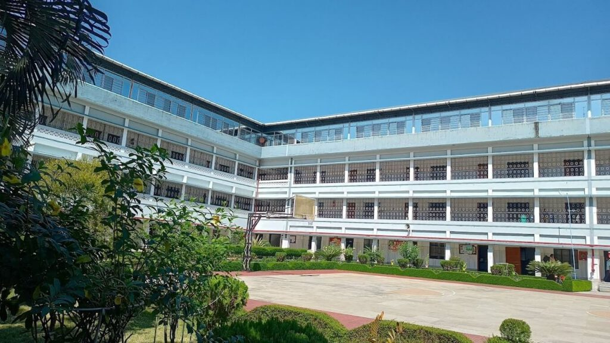
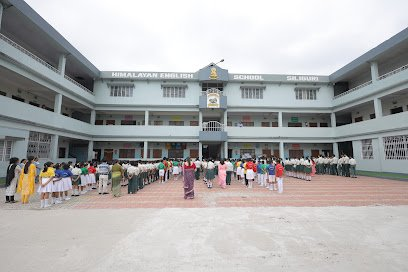
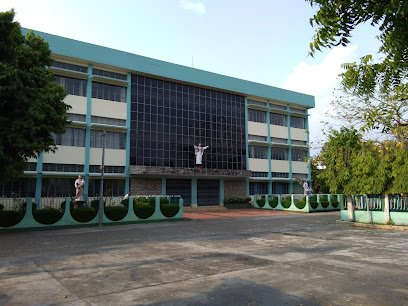
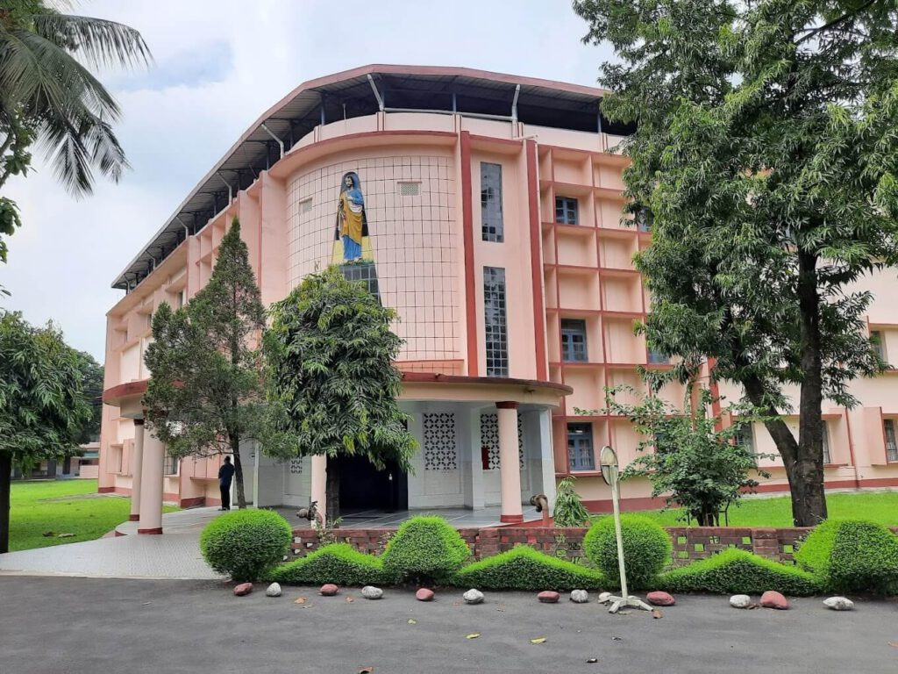
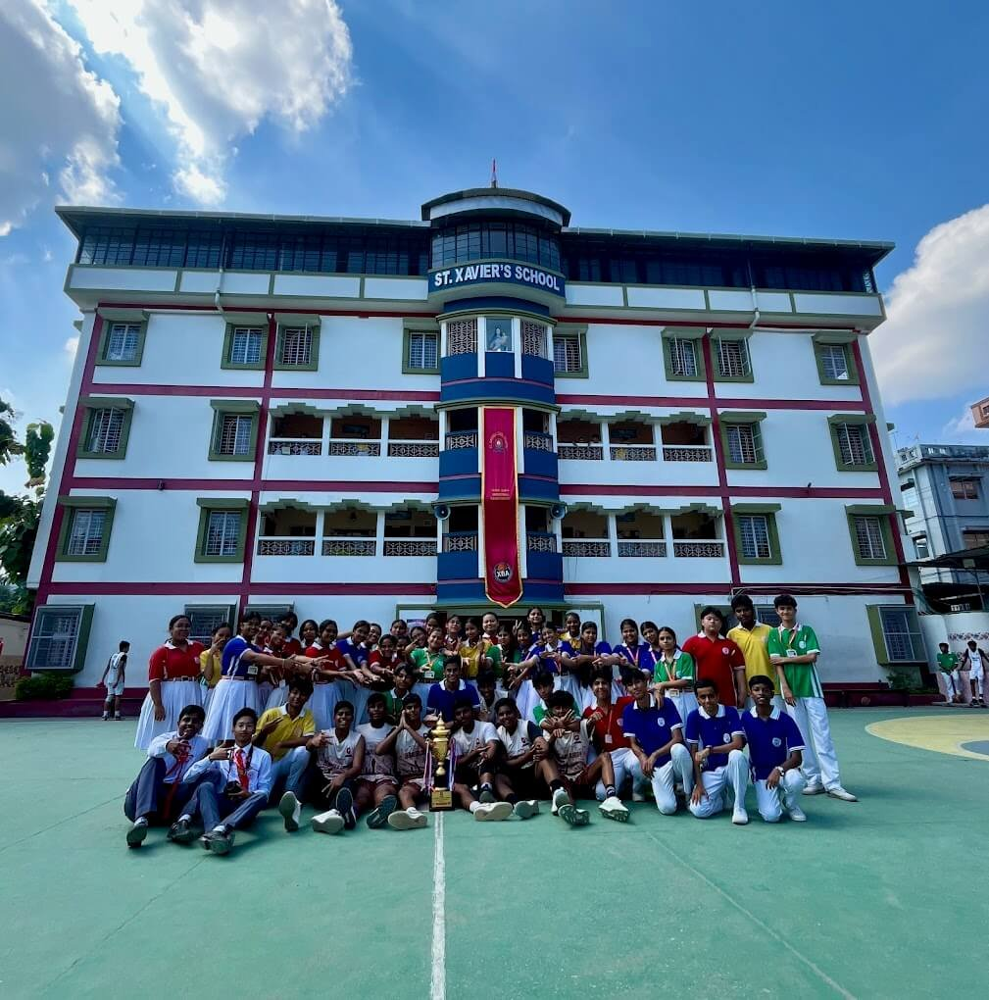
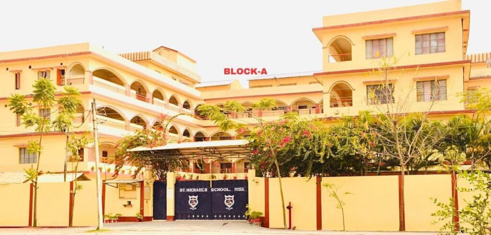

Siliguri has quickly evolved into one of North Bengal’s leading education hubs, offering a strong mix of reputed schools, colleges, coaching centres, and skill-development institutes. Families from the surrounding hills, the Dooars, and even neighbouring states prefer Siliguri because it provides quality academics, modern infrastructure, and a safe learning environment for students of all age groups.
Among its many institutions, Siliguri is especially known for its well-established ICSE and ISC schools that focus on strong academics, character building and overall growth of students. Each school has its own history, values and teaching style.
In this blog we have put together a straightforward list of the top ICSE schools in Siliguri, that will help parents and students understand what each school offers and choose the one that fits their needs.
List of Top ICSE & ISC Schools in Siliguri
Don Bosco School Siliguri

Don Bosco School is one of the most respected schools in Siliguri. It was established in the year 1973 and has completed more than fifty years of service. The school follows the vision of the Salesians of Don Bosco. It believes in training students to grow in discipline, clarity, common sense and character. The aim is not only to prepare students for exams but also to help them become good human beings.
The school is a day school for boys. It has more than one hundred teachers and more than two thousand five hundred students. It also runs an evening school for underprivileged children which shows its commitment to society. Students get many opportunities in sports, music, arts, performance activities, nature programmes and community service. These activities help students learn confidence, teamwork and leadership.
Classes: LKG to Class 12
Type: Day School
Category: Boys
Website- https://www.dbssiliguri.in
Contact Details:
Mobile No.- 03532542947
Email: dbschoolslg@gmail.com
Address: Sevoke Road, Ward 42, 2nd Mile, Don Bosco Colony, Siliguri, West Bengal 734001
Auxilium Convent School

Auxilium Convent School was started with a clear vision to train and prepare students with knowledge, wisdom and values. It is managed by the Missionary Sisters of Mary Help of Christians. The school is known for discipline and steady academic performance.
Students have access to science labs, a library and regular competitions through the year. These competitions help in building confidence and overall growth. The school is co educational and offers arts and commerce streams in higher classes.
Classes: Nursery to Class 12
Type: Day School
Category: Co-Ed
Website- https://www.acssiliguri.com
Contact Details:
Mobile No.- 03532544792
Email: acssiliguri@gmail.com
Address: Sevoke Road Ward 41, Jyoti Nagar, Siliguri, West Bengal 734001
Nirmala Convent School

Nirmala Convent School was founded on 20 June 1994 to meet the need for a good school for girls in Siliguri.The school began with classes from Nursery to Class 1 and has grown steadily since then.It is run by the Missionary Sisters of the Immaculate under the Siliguri Nirmala Vikas Samiti.
The school focuses on the complete growth of each girl. This includes intellectual, social, cultural, moral and spiritual development. Teachers give special attention to discipline and values while respecting every student’s religious background. The school has smart classrooms and laboratories as well.
Classes: Nursery to Class 12 (Science & Commerce)
Type: Day School
Category: Girls
Website- https://www.nirmalaconventschoolsiliguri.com
Contact Details:
Mobile No.- 03532590031
Email: nirmalascslg@gmail.com
Address: 3rd Mile, Chayan Para, Siliguri, West Bengal 734008
Himalayan English School

Himalayan English School was established in 1974.It is a co educational school that welcomes all students without any discrimination. The motto of the school is perseverance. The school gives importance to academic performance, skill development and character formation.
Along with this, the school tries to upgrade its teaching style with technology. New methods and interactive teaching help students learn better.
Classes: Nursery to Class 12 (Arts & Commerce)
Type: Day School
Category: Co-Ed
Website- https://hesslg.com/about.php
Contact Details:
Mobile No.- 09002933294
Address:
Primary Section- Iskcon Road, Haider Para, Siliguri
Secondary Section: North, Eastern Bypass, Ektiasal, Road, Siliguri, West Bengal 734001
St Joseph’s School, Bhaktinagar

St Joseph’s School Bhaktinagar was established in 1978. It is a co educational ICSE school that has been providing steady education for many years. The school focuses on good teaching, discipline and regular academic practice. Students get a balanced environment with studies and activities.
Classes: LKG to Class 12
Type: Day School
Category: Co-Ed
Website- https://stjosephsiliguri.com/
Contact Details:
Mobile No.- 03532662824
Email: sjschoolnjp@yahoo.in
Address: Bhaktinagar, NJP, Siliguri – 734007
St Joseph’s High School, Matigara

St Joseph’s High School was founded in 1961.It is run by the Daughters of the Cross It is an English medium Catholic girls school recognised by the West Bengal Board of Secondary Education and affiliated with the ICSE and ISC boards.
The school prepares students for both Class ten and Class twelve board exams. It focuses on complete development and encourages students to grow into confident and well rounded individuals.
Classes: Nursery to Class 12 (Science, Commerce & Humanities)
Type: Day School
Category: Girls
Website- https://sjhsm.in
Contact Details:
Mobile No.- 7319148368
Email: sjhsmatigara@gmail.com
Address: Matigara, Jitu, West Bengal, 734013
Mahbert High School
Mahbert High School was established in 1967. It is one of the oldest and most trusted schools in Siliguri. The school is co educational and also provides hostel facilities.
It is known for strong academics and active participation in extracurricular activities. Students get a chance to grow in studies, sports, arts and leadership.
Classes: Class 1 to Class 12
Type: Day School
Category: Co-Ed
Contact Details:
Mobile No.- 08145402299
Address: Dagapur, Siliguri, Bara Gharia, West Bengal 734002
St Xavier’s School

St Xavier’s School is a Christian minority institution recognised by the National Commission for Minority Educational Institutions. It is managed by the Thuruthel Educational Social Cultural and Philanthropic Society. The school prepares students for ICSE and ISC examinations.
The aim of the school is to help children grow into disciplined, responsible and self sufficient individuals. Students learn through academics, activities and value based training.
Classes: Kindergarten to Class 12 (Science & Commerce)
Type: Day School
Category: Co-Ed
Website- https://www.sxssiliguri.com
Contact Details:
Mobile No.- 9832012123
Address: Ward 41, Don Bosco Colony, Siliguri, West Bengal 734001
Sacred Heart School
Sacred Heart School was established in 1997. It is run by the Kurseong Sacred Heart Educational Society. The school offers both ICSE and ISC. It is a co educational school with day and boarding facilities. In 2024 the school was recognized as the Best Residential School in North East India by ASSOCHAM. It is also listed among the top boarding schools of Bengal.
The school has smart classrooms, modern laboratories, air conditioned dormitories and a wide range of extracurricular activities. New features such as a children’s park, a resource centre and guided coaching for competitive exams make the school suitable for students who want complete academic support.
Classes: Kindergarten to Class 12 (Arts, Science & Commerce)
Type: Boarding
Category: Co-ed
Website- https://sacredheartsiliguri.com/
Contact Details:
Mobile No.- 09083294611
Email: contact@sacredheartsiliguri.com
Address: P.S. Matigara, Panchanand Sarani Road P.O. New Rangia, Siliguri, West Bengal 734013
St Michael’s School

St Michael’s School was founded in 1999. It offers both day boarding and full boarding options. The school has separate wings for boys and girls. It gives equal importance to academic learning and co curricular activities.
Students participate in many inter house, inter school and national competitions. They take part in quiz, spell bee, elocution, model united nations, taekwondo and debates. The school has modern facilities like AI labs, robotics labs, smart boards, a library, music room, dance room and various student clubs.
Classes: Nursery to Class 10
Type: Day & Board
St. Michael’s for Boys
Website: https://smsslg.com
Contact Details:
Mobile No.- 03561350018
Email: official.michaels1999@gmail.com
Address: Sevoke Road, By lane : St. Michael’s School Road, Jyoti Nagar, Siliguri – 734001, West Bengal
St. Michael’s for Girls
Website: https://www.smgslg.com
Contact Details:
Mobile No.- 09434088742
Email: smsgirls2014@gmail.com
Address: Gate No 3, Jyoti Nagar, 2nd Mile, Sevoke Road, Siliguri 734001
Choosing the right school is a big decision for every child’s future. In Siliguri, we have many good schools that don’t just focus on studies, but also on values, confidence, and overall personality.
Before finalising a school, it’s always helpful for parents to visit the campus, see the classrooms, check the facilities, and talk to the teachers. This gives a clear idea of how the school teaches and how it supports its students.
With the right information, picking the best ICSE or ISC school in Siliguri becomes a simple and confident decision.